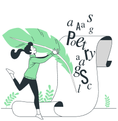

Berita Terbaru

Judul Berita 1
Tanggal Publikasi: 21 Maret 2024
Judul Berita 1
Tanggal Publikasi: 21 Maret 2024
Judul Berita 1
Tanggal Publikasi: 21 Maret 2024
Tips Menarik
Strategi mengatur waktu dan mengelola jadwal belajar.
Tanggal Publikasi: 23 Maret 2024
Strategi untuk mengatasi rasa malas dan menemukan inspirasi dalam pembelajaran.
Tanggal Publikasi: 25 Maret 2024
Berapa lama sebaiknya anak-anak membaca setiap hari?
Tanggal Publikasi: 28 Maret 2024
Frequently Asked Questions
SEO, or Search Engine Optimization, is the practice of optimizing a website
to improve its visibility on search engines like Google. It involves various techniques to enhance a
site's ranking in search results. SEO is crucial for online businesses as it helps drive organic traffic,
increases visibility, and ultimately leads to higher conversions.
The timeline for seeing results from SEO can vary based on several factors,
such as the competitiveness of keywords, the current state of the website, and the effectiveness of the
SEO strategy. Generally, it may take several weeks to months before noticeable improvements occur.
However, long-term commitment to SEO is essential for sustained success.
A successful SEO strategy involves various components, including keyword
research, on-page optimization, quality content creation, link building, technical SEO, and user
experience optimization. These elements work together to improve a website's relevance and authority in
the eyes of search engines.
Mobile optimization is crucial for SEO because search engines prioritize
mobile-friendly websites. With the increasing use of smartphones, search engines like Google consider
mobile responsiveness as a ranking factor. Websites that provide a seamless experience on mobile devices
are more likely to rank higher in search results.
Backlinks, or inbound links from other websites to yours, play a
significant role in SEO. They are considered a vote of confidence and can improve a site's authority.
Quality over quantity is crucial when acquiring backlinks. Strategies for obtaining backlinks include
creating high-quality content, guest posting, reaching out to industry influencers, and participating in
community activities. It's important to focus on natural and ethical link-building practices.
Mulai Perjalanan Pembelajaranmu Bersama LITERASIK
Temukan berbagai macam konten literasi, mulai dari ulasan buku, artikel inspiratif, hingga cerita pendek yang memikat.

Ambil kesempatan untuk mengekspresikan diri. Mulailah menulis dan membagikan karya tulismu sendiri.
Sambutlah ide dan pandangan Anda dalam komunitas. Bertukar cerita, rekomendasi buku, dan temukan teman sejati yang memiliki hobi serupa.